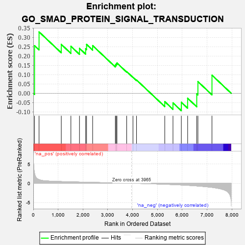
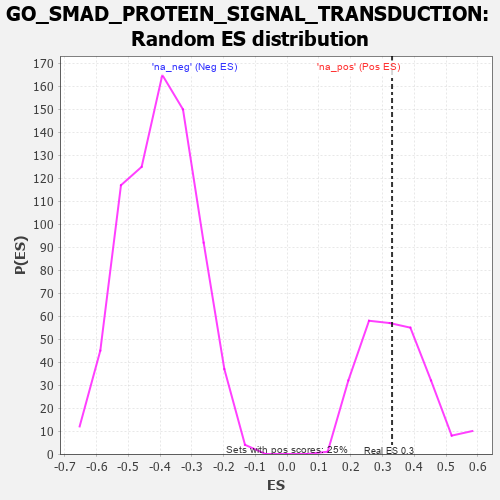

| | | Dataset | 7d |
| Phenotype | NoPhenotypeAvailable |
| Upregulated in class | na_pos |
| GeneSet | GO_SMAD_PROTEIN_SIGNAL_TRANSDUCTION |
| Enrichment Score (ES) | 0.33000025 |
| Normalized Enrichment Score (NES) | 0.97558975 |
| Nominal p-value | 0.486166 |
| FDR q-value | 0.76232004 |
| FWER p-Value | 1.0 |
Table: GSEA Results Summary

Fig 1: Enrichment plot: GO_SMAD_PROTEIN_SIGNAL_TRANSDUCTION
Profile of the Running ES Score & Positions of GeneSet Members on the Rank Ordered List
| PROBE | GENE SYMBOL | GENE_TITLE | RANK IN GENE LIST | RANK METRIC SCORE | RUNNING ES | CORE ENRICHMENT | | 1 | TGFB3 | | | 49 | 2.654 | 0.2561 | Yes |
| 2 | SMAD5 | | | 231 | 0.979 | 0.3300 | Yes |
| 3 | NUP93 | | | 1127 | 0.459 | 0.2627 | No |
| 4 | INHBB | | | 1514 | 0.388 | 0.2526 | No |
| 5 | SMAD4 | | | 1860 | 0.326 | 0.2414 | No |
| 6 | BMP7 | | | 2107 | 0.290 | 0.2390 | No |
| 7 | ATOH8 | | | 2145 | 0.285 | 0.2625 | No |
| 8 | HIPK2 | | | 2389 | 0.247 | 0.2564 | No |
| 9 | SMAD3 | | | 3303 | 0.105 | 0.1519 | No |
| 10 | SMAD1 | | | 3337 | 0.099 | 0.1575 | No |
| 11 | SMAD7 | | | 3369 | 0.093 | 0.1628 | No |
| 12 | SKI | | | 3762 | 0.032 | 0.1167 | No |
| 13 | PARP1 | | | 4014 | -0.010 | 0.0861 | No |
| 14 | HNF4A | | | 4157 | -0.034 | 0.0717 | No |
| 15 | MAGI2 | | | 5295 | -0.269 | -0.0447 | No |
| 16 | ROR2 | | | 5626 | -0.353 | -0.0514 | No |
| 17 | SH2B1 | | | 5963 | -0.459 | -0.0483 | No |
| 18 | SMAD2 | | | 6216 | -0.541 | -0.0265 | No |
| 19 | INHBE | | | 6584 | -0.701 | -0.0033 | No |
| 20 | WWTR1 | | | 6631 | -0.729 | 0.0629 | No |
| 21 | OVOL2 | | | 7197 | -1.068 | 0.0973 | No |
Table: GSEA details [plain text format]

Fig 2: GO_SMAD_PROTEIN_SIGNAL_TRANSDUCTION: Random ES distribution
Gene set null distribution of ES for GO_SMAD_PROTEIN_SIGNAL_TRANSDUCTION